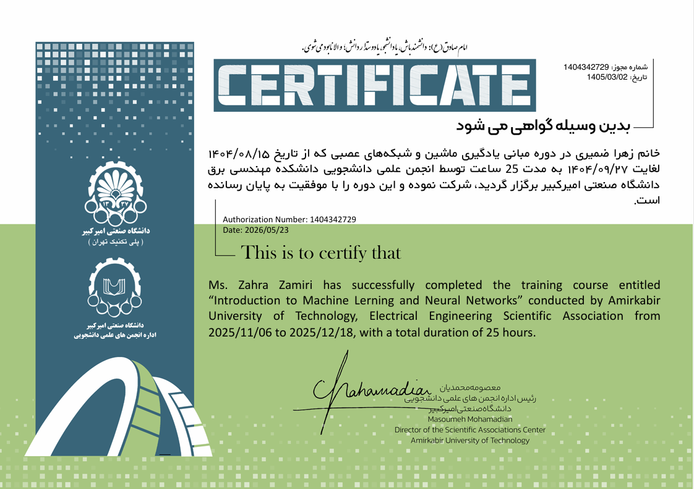
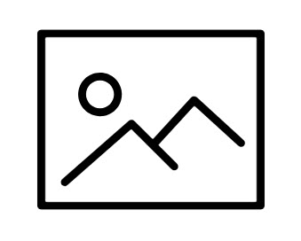
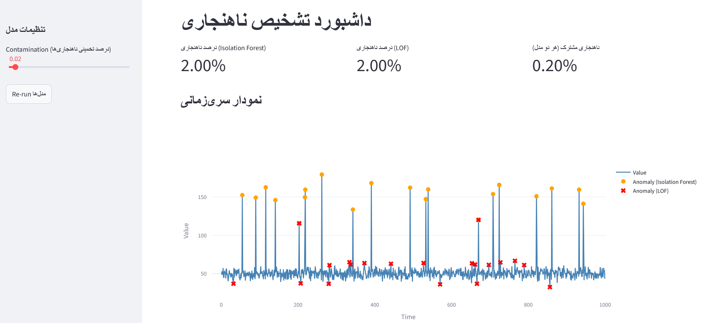

.png)
Introduction
دانشجوی خلاق و مسئولیت پذیر ترم آخر مهندسی کامپیوتر با تمرکز بر یادگیری و بینایی ماشین.
دارای روحیه کار تیمی، توانایی حل مسئله و مدیریت زمان؛
مشتاق یادگیری مداوم و توسعه راهکار های هوشمند در پروژه های عملی.
محل سکونت: مشهد
تحصیلات: کارشناسی مهندسی کامپیوتر
دانشگاه بینالمللی امام رضا(ع)
وضعیت فعلی: دانشجو (ترم آخر) و فریلنسر در حوزهی یادگیری ماشین
-jukebox-bg-removed.png)
Certificates

مدرک یادگیری ماشین و شبکه های عصبی

مدرک پایتون پیشرفته از دانشگاه فردوسی مشهد
مدرک تحلیل داده با زبان R از فنی حرفه ای
Projects

پروژه تشخیص آنومالی از داده های سری زمانی

پروژه طبقه بندی کننده داده های پزشکی
دانش و مهارتهای فنی
- مدیریت وضعیت برنامه (Session State در Streamlit)
- طراحی رابط کاربری تعاملی و فرمهای ورودی
- اصول یادگیری نظارتشده (Supervised Learning) و طبقهبندی (Classification)
- پیشپردازش داده (Data Preprocessing) و مهندسی ویژگی ساده
- مفاهیم یادگیری ماشین
- تشخیص ناهنجاری (Anomaly Detection)
- مفهوم Contamination
- یادگیری بدونناظر (Unsupervised Learning)
- محیط توسعه
- VS Code
- اجرای برنامه از طریق ترمینال (streamlit run)
Skills
طراحی و رابط کاربری
UI/UX
- Canva
- Figma
تدوین و مالتی مدیا
Edit & multimedia
- CyberLink PowerDirector
توسعه وب و ابزار های عمومی
web development & general tools
- HTML
- CSS
- JAVASCRIPT
- GIT
Languages
فارسی
سطح تسلط: زبان مادری | Native
انگیسی
سطح تسلط: متوسط | Intermediate/B1
Work experience
تجارب حرفه ای
ﺗﻮﺳﻌﻪ دﻫﻨﺪه ﻫﻮش ﻣﺼﻨﻮﻋﯽ و ﺑﯿﻨﺎﯾﯽ ﻣﺎﺷﯿﻦ
ﺷﺮﮐﺖ داﻧﺶ ﺑﻨﯿﺎن ﮐﯿﺎن ﺗﺮاز | ۱۴۰۴ - اﮐﻨﻮن
- ﻃﺮاﺣﯽ و ﭘﯿﺎده ﺳﺎزی ﻣﺪل ﻫﺎی ﯾﺎدﮔﯿﺮی ﻋﻤﯿﻖ ﺑﺮای ﺗﺤﻠﯿﻞ و ﭘﺎﯾﺶ ﺧﻮدﮐﺎر رﻓﺘﺎر ﻃﯿﻮر.
- ﺗﻮﺳﻌﻪ ﯾﮏ اﻟﮕﻮرﯾﺘﻢ دﻗﯿﻖ ﻣﺒﺘﻨﯽ ﺑﺮ ﺑﯿﻨﺎﯾﯽ ﻣﺎﺷﯿﻦ ﺑﺮای ﺷﻤﺎرش و ردﯾﺎﺑﯽ اﻓﺮاد در ﻣﺤﯿﻂ ﻫﺎی ﭘﺮﺗﺮدد.
- ﻣﺴﺌﻮﻟﯿﺖ ﭘﯿﺶ ﭘﺮدازش داده ﻫﺎی ﺗﺼﻮﯾﺮی، اﻓﺰاﯾﺶ داده Data Augmentation و ﺑﻬﯿﻨﻪ ﺳﺎزی ﻣﺪل ﻫﺎ ﺑﺮای دﺳﺘﯿﺎﺑﯽ ﺑﻪ ﻋﻤﻠﮑﺮد ﺑﻬﺘﺮ.
.png)